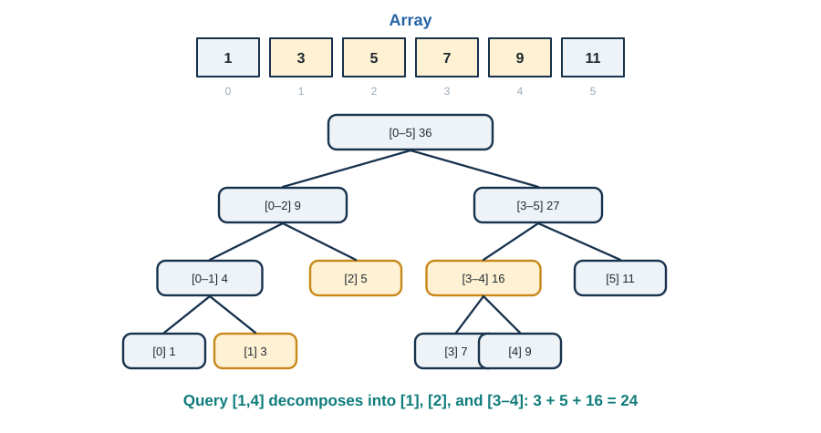

12 Advanced Data Structures - When Arrays and Trees Aren’t Enough
Answering “What’s the sum from index 47 to 891?” in Microseconds
“The difference between a good programmer and a great programmer is understanding data structures.” - Linus Torvalds
Advanced data structures become valuable when ordinary arrays, lists, and hash tables no longer match the workload.
12.1 Introduction: Beyond the Basics
You know arrays, linked lists, hash tables, and binary search trees. These are the bread and butter of programming. But what happens when you need to:
- Find the sum of elements from index 1000 to 5000 in an array that changes frequently (try doing that in \(O(log n)\)!)
- Support “undo” in your application without storing copies of everything (time travel, anyone?)
- Represent a billion-element bit vector in just megabytes (not gigabytes!)
- Process data faster than your CPU’s cache misses (algorithms that adapt to any cache size!)
These problems require advanced data structures—clever ways of organizing data that unlock operations you didn’t think were possible.
What makes a data structure “advanced”?
- Non-obvious structure: Not immediately intuitive, but brilliant once you understand it
- Extreme efficiency: Asymptotically or practically faster than standard approaches
- Novel capabilities: Enable operations that seem impossible
- Elegant design: Simple ideas that compose beautifully
In this chapter, we’ll explore data structures that competitive programmers swear by, that power database indices, that make version control systems possible, and that squeeze the last drop of performance from modern hardware.
Real-world impact: - Segment trees: Used in competitive programming, computational geometry, graphics - Fenwick trees: Database range queries, real-time analytics - Persistent structures: Git, functional programming languages, undo systems - Succinct structures: Bioinformatics (massive genomes), web search (graph compression) - Cache-oblivious algorithms: High-performance computing, databases
Let’s dive into the wonderful world of advanced data structures!
12.2 Segment Trees: Range Queries on Steroids
12.2.1 The Problem
You have an array of n elements and need to: 1. Query: Find the sum (or min, max, etc.) of elements from index L to R 2. Update: Change the value at a specific index
Naive solutions: - Query: \(O(n)\) by iterating through the range - Update: \(O(1)\) just set the value
OR
- Use prefix sums for \(O(1)\) queries, but \(O(n)\) updates
Can we do better? Yes! \(O(log n)\) for both operations!
12.2.2 The Segment Tree Idea
A segment tree is a binary tree where: - Each leaf represents a single element - Each internal node represents a range (segment) of elements - Each node stores the aggregate (sum, min, max, etc.) of its segment

Key insight: A query interval \([L,R]\) has a canonical decomposition into \(O(\log n)\) segment-tree nodes. For an associative combine operation \(\circ\), the range result is
\[ A_L\circ A_{L+1}\circ\cdots\circ A_R, \]
computed from those node aggregates. The logarithmic bound assumes a balanced binary segment tree.
Example: Query sum from index 1 to 4: - Break into: [1:3] + [2:5] + [3-4:16] - Or even better: [1:3] + [2:5] + [3:7] + [4:9] - Total: 3 + 5 + 7 + 9 = 24
12.2.3 Building a Segment Tree
class SegmentTree:
"""
Segment Tree for range queries and point updates.
Supports any associative operation (sum, min, max, GCD, etc.).
"""
def __init__(self, arr, operation='sum'):
"""
Build segment tree from array.
Args:
arr: Input array
operation: 'sum', 'min', 'max', 'gcd', etc.
Time: O(n)
Space: O(n)
"""
self.n = len(arr)
self.arr = arr.copy()
# Tree needs 4*n space (worst case)
self.tree = [0] * (4 * self.n)
# Set operation and identity
if operation == 'sum':
self.op = lambda a, b: a + b
self.identity = 0
elif operation == 'min':
self.op = min
self.identity = float('inf')
elif operation == 'max':
self.op = max
self.identity = float('-inf')
elif operation == 'gcd':
import math
self.op = math.gcd
self.identity = 0
else:
raise ValueError(f"Unknown operation: {operation}")
# Build the tree
self._build(0, 0, self.n - 1)
def _build(self, node, start, end):
"""
Build segment tree recursively.
Args:
node: Current node index in tree
start, end: Range [start, end] this node represents
"""
if start == end:
# Leaf node
self.tree[node] = self.arr[start]
else:
mid = (start + end) // 2
left_child = 2 * node + 1
right_child = 2 * node + 2
# Build left and right subtrees
self._build(left_child, start, mid)
self._build(right_child, mid + 1, end)
# Internal node = combine children
self.tree[node] = self.op(
self.tree[left_child],
self.tree[right_child]
)
def query(self, L, R):
"""
Query range [L, R].
Time: O(log n)
"""
return self._query(0, 0, self.n - 1, L, R)
def _query(self, node, start, end, L, R):
"""
Recursive query helper.
Cases:
1. [start, end] completely outside [L, R] → return identity
2. [start, end] completely inside [L, R] → return tree[node]
3. [start, end] partially overlaps [L, R] → recurse on children
"""
# No overlap
if R < start or end < L:
return self.identity
# Complete overlap
if L <= start and end <= R:
return self.tree[node]
# Partial overlap
mid = (start + end) // 2
left_child = 2 * node + 1
right_child = 2 * node + 2
left_result = self._query(left_child, start, mid, L, R)
right_result = self._query(right_child, mid + 1, end, L, R)
return self.op(left_result, right_result)
def update(self, index, value):
"""
Update element at index to value.
Time: O(log n)
"""
self.arr[index] = value
self._update(0, 0, self.n - 1, index, value)
def _update(self, node, start, end, index, value):
"""Recursive update helper."""
if start == end:
# Leaf node
self.tree[node] = value
else:
mid = (start + end) // 2
left_child = 2 * node + 1
right_child = 2 * node + 2
if index <= mid:
self._update(left_child, start, mid, index, value)
else:
self._update(right_child, mid + 1, end, index, value)
# Update current node
self.tree[node] = self.op(
self.tree[left_child],
self.tree[right_child]
)
def __str__(self):
"""String representation."""
return f"SegmentTree({self.arr})"12.2.4 Step-by-Step Example
Let’s build a segment tree for array [1, 3, 5, 7, 9, 11] and query sum from index 1 to 4:
def example_segment_tree_trace():
"""Trace segment tree operations step by step."""
print("=== Segment Tree Example ===\n")
arr = [1, 3, 5, 7, 9, 11]
print(f"Array: {arr}")
# Build tree
st = SegmentTree(arr, operation='sum')
print("\nSegment tree built!")
# Visualize tree structure
print("\nTree structure (node: [range] = value):")
print("Level 0: [0-5] = 36")
print("Level 1: [0-2] = 9, [3-5] = 27")
print("Level 2: [0-1] = 4, [2] = 5, [3-4] = 16, [5] = 11")
print("Level 3: [0] = 1, [1] = 3, [3] = 7, [4] = 9")
# Query
L, R = 1, 4
result = st.query(L, R)
print(f"\nQuery sum({L}, {R}):")
print(f" Elements: {arr[L:R+1]}")
print(f" Sum: {sum(arr[L:R+1])}")
print(f" Segment tree result: {result}")
print(f" ✓ Correct!")
# Update
print(f"\nUpdate index 2 from {arr[2]} to 10")
st.update(2, 10)
# Query again
result_after = st.query(L, R)
print(f"\nQuery sum({L}, {R}) after update:")
print(f" New result: {result_after}")
print(f" Expected: {3 + 10 + 7 + 9} = 29")
print(f" ✓ Correct!")
if __name__ == "__main__":
example_segment_tree_trace()12.2.5 Lazy Propagation: Range Updates
What if we want to update an entire range [L, R] at once?
Naive approach: Update each element individually → \(O(n log n)\)
Lazy propagation: Defer updates until necessary → \(O(log n)\)!
Key idea: Mark nodes as “lazy” and propagate updates only when needed.
class LazySegmentTree:
"""
Segment tree with lazy propagation for range updates.
Supports:
- Range query: O(log n)
- Range update: O(log n)
"""
def __init__(self, arr):
"""Initialize with array."""
self.n = len(arr)
self.arr = arr.copy()
self.tree = [0] * (4 * self.n)
self.lazy = [0] * (4 * self.n) # Lazy propagation array
self._build(0, 0, self.n - 1)
def _build(self, node, start, end):
"""Build tree."""
if start == end:
self.tree[node] = self.arr[start]
else:
mid = (start + end) // 2
left = 2 * node + 1
right = 2 * node + 2
self._build(left, start, mid)
self._build(right, mid + 1, end)
self.tree[node] = self.tree[left] + self.tree[right]
def _push(self, node, start, end):
"""
Push lazy value down to children.
This is where the magic happens!
"""
if self.lazy[node] != 0:
# Apply lazy value to current node
self.tree[node] += (end - start + 1) * self.lazy[node]
# If not a leaf, propagate to children
if start != end:
left = 2 * node + 1
right = 2 * node + 2
self.lazy[left] += self.lazy[node]
self.lazy[right] += self.lazy[node]
# Clear lazy value
self.lazy[node] = 0
def update_range(self, L, R, value):
"""
Add value to all elements in range [L, R].
Time: O(log n)
"""
self._update_range(0, 0, self.n - 1, L, R, value)
def _update_range(self, node, start, end, L, R, value):
"""Recursive range update with lazy propagation."""
# Push pending updates
self._push(node, start, end)
# No overlap
if R < start or end < L:
return
# Complete overlap
if L <= start and end <= R:
# Mark as lazy and defer
self.lazy[node] += value
self._push(node, start, end)
return
# Partial overlap - recurse
mid = (start + end) // 2
left = 2 * node + 1
right = 2 * node + 2
self._update_range(left, start, mid, L, R, value)
self._update_range(right, mid + 1, end, L, R, value)
# Push children before reading
self._push(left, start, mid)
self._push(right, mid + 1, end)
# Update current node
self.tree[node] = self.tree[left] + self.tree[right]
def query_range(self, L, R):
"""
Query sum of range [L, R].
Time: O(log n)
"""
return self._query_range(0, 0, self.n - 1, L, R)
def _query_range(self, node, start, end, L, R):
"""Recursive range query."""
# Push pending updates
self._push(node, start, end)
# No overlap
if R < start or end < L:
return 0
# Complete overlap
if L <= start and end <= R:
return self.tree[node]
# Partial overlap
mid = (start + end) // 2
left = 2 * node + 1
right = 2 * node + 2
left_sum = self._query_range(left, start, mid, L, R)
right_sum = self._query_range(right, mid + 1, end, L, R)
return left_sum + right_sum
def example_lazy_propagation():
"""Demonstrate lazy propagation."""
print("\n=== Lazy Propagation Example ===\n")
arr = [1, 2, 3, 4, 5, 6, 7, 8]
print(f"Array: {arr}")
st = LazySegmentTree(arr)
# Query initial sum
L, R = 2, 5
print(f"\nInitial sum({L}, {R}) = {st.query_range(L, R)}")
print(f" Expected: {sum(arr[L:R+1])} ✓")
# Range update
print(f"\nAdd 10 to range [1, 4]")
st.update_range(1, 4, 10)
# Query after update
result = st.query_range(L, R)
print(f"\nsum({L}, {R}) after update = {result}")
# Manual calculation
new_arr = arr.copy()
for i in range(1, 5):
new_arr[i] += 10
expected = sum(new_arr[L:R+1])
print(f" Expected: {expected}")
print(f" ✓ Correct!" if result == expected else " ✗ Wrong!")
if __name__ == "__main__":
example_lazy_propagation()12.2.6 Applications and Variants
Common applications: 1. Range sum/min/max queries with updates 2. Interval scheduling problems 3. Computational geometry (sweep line algorithms) 4. Graphics (collision detection)
Variants:
class SegmentTreeVariants:
"""Various segment tree applications."""
@staticmethod
def range_minimum_query(arr):
"""
Build RMQ segment tree.
Query min in O(log n), update in O(log n).
"""
return SegmentTree(arr, operation='min')
@staticmethod
def range_gcd_query(arr):
"""
Query GCD of range in O(log n).
Useful for: finding common factors
"""
return SegmentTree(arr, operation='gcd')
@staticmethod
def count_elements_less_than(arr, threshold):
"""
Count elements < threshold in range [L, R].
Uses segment tree with custom operation.
"""
# Each node stores count of elements < threshold
# Can be extended to support dynamic thresholds
pass
def example_segment_tree_applications():
"""Demonstrate various segment tree applications."""
print("\n=== Segment Tree Applications ===\n")
arr = [12, 7, 5, 15, 3, 9, 11, 18]
# Range Minimum Query
print("1. Range Minimum Query:")
rmq = SegmentTree(arr, operation='min')
L, R = 2, 6
result = rmq.query(L, R)
print(f" min({L}, {R}) = {result}")
print(f" Elements: {arr[L:R+1]}")
print(f" Expected: {min(arr[L:R+1])} ✓\n")
# Range Maximum Query
print("2. Range Maximum Query:")
rmaxq = SegmentTree(arr, operation='max')
result = rmaxq.query(L, R)
print(f" max({L}, {R}) = {result}")
print(f" Expected: {max(arr[L:R+1])} ✓\n")
# Range GCD Query
print("3. Range GCD Query:")
import math
gcd_tree = SegmentTree(arr, operation='gcd')
result = gcd_tree.query(L, R)
print(f" gcd({L}, {R}) = {result}")
expected_gcd = arr[L]
for i in range(L+1, R+1):
expected_gcd = math.gcd(expected_gcd, arr[i])
print(f" Expected: {expected_gcd} ✓")
if __name__ == "__main__":
example_segment_tree_applications()12.3 Fenwick Trees: Elegant Simplicity
12.3.1 The Inspiration
Segment trees are powerful but… they’re a bit heavy. 4n space, lots of pointer chasing, somewhat complex code.
Fenwick Trees (also called Binary Indexed Trees or BIT) solve the same problem with: - ✅ Much simpler code (~10 lines!) - ✅ Better cache performance - ✅ Only n space (vs 4n) - ✅ Same \(O(log n)\) operations
The catch? Less flexible than segment trees (mainly for cumulative operations like sum).
12.3.2 The Brilliant Idea
The key insight: represent cumulative sums using binary representation of indices!
Example: Array of size 8 (indices 1-8 in 1-indexed)
Index (binary): 001 010 011 100 101 110 111 1000
BIT stores: [1] [1-2] [3] [1-4] [5] [5-6] [7] [1-8]
BIT[1] = arr[1]
BIT[2] = arr[1] + arr[2]
BIT[3] = arr[3]
BIT[4] = arr[1] + arr[2] + arr[3] + arr[4]
...Pattern: Let \(\operatorname{lowbit}(i)=i\mathbin{\&}(-i)\). Then a Fenwick-tree entry stores
\[ \operatorname{BIT}[i] =\sum_{j=i-\operatorname{lowbit}(i)+1}^{i}A[j]. \tag{12.1}\]
Thus BIT[i] covers \(\operatorname{lowbit}(i)=2^k\) elements ending at \(i\), where \(k\) is the position of the least significant set bit.
Why is this brilliant?
To compute prefix sum up to index i: 1. Add BIT[i] 2. Remove rightmost set bit from i 3. Add BIT[new i] 4. Repeat until i = 0
Example: Sum up to index 7 (binary: 111) - Add BIT[111 = 7] (covers [7]) - Remove rightmost bit: 110 (6) - Add BIT[110 = 6] (covers [5-6]) - Remove rightmost bit: 100 (4) - Add BIT[100 = 4] (covers [1-4]) - Done! Sum = BIT[7] + BIT[6] + BIT[4]
12.3.3 Implementation
class FenwickTree:
"""
Fenwick Tree (Binary Indexed Tree).
Supports:
- Prefix sum query: O(log n)
- Point update: O(log n)
- Range query: O(log n)
Space: O(n) (much better than segment tree!)
"""
def __init__(self, n):
"""
Initialize Fenwick tree.
Args:
n: Size of array (1-indexed internally)
"""
self.n = n
self.tree = [0] * (n + 1) # 1-indexed
@classmethod
def from_array(cls, arr):
"""Build from array (0-indexed)."""
ft = cls(len(arr))
for i, val in enumerate(arr):
ft.update(i, val)
return ft
def update(self, index, delta):
"""
Add delta to element at index.
Args:
index: 0-indexed position
delta: Value to add
Time: O(log n)
"""
index += 1 # Convert to 1-indexed
while index <= self.n:
self.tree[index] += delta
# Move to next index that needs updating
# Add rightmost set bit
index += index & (-index)
def prefix_sum(self, index):
"""
Get sum of elements from 0 to index (inclusive).
Args:
index: 0-indexed position
Returns:
Sum of arr[0:index+1]
Time: O(log n)
"""
index += 1 # Convert to 1-indexed
total = 0
while index > 0:
total += self.tree[index]
# Remove rightmost set bit
index -= index & (-index)
return total
def range_sum(self, left, right):
"""
Get sum of elements from left to right (inclusive).
Time: O(log n)
"""
if left > 0:
return self.prefix_sum(right) - self.prefix_sum(left - 1)
else:
return self.prefix_sum(right)
def set(self, index, value):
"""
Set element at index to value.
Time: O(log n)
"""
current = self.range_sum(index, index)
delta = value - current
self.update(index, delta)
def __str__(self):
"""String representation."""
return f"FenwickTree(n={self.n})"
def visualize_fenwick_tree():
"""Visualize how Fenwick tree works."""
print("=== Fenwick Tree Visualization ===\n")
arr = [1, 2, 3, 4, 5, 6, 7, 8]
print(f"Array: {arr}\n")
ft = FenwickTree.from_array(arr)
print("Fenwick Tree structure:")
print("Index (1-indexed) | Binary | Covers | Value")
print("-" * 50)
for i in range(1, len(arr) + 1):
binary = format(i, '03b')
# Find rightmost set bit
rightmost = i & (-i)
start = i - rightmost + 1
print(f"{i:8d} | {binary:6s} | [{start:2d}-{i:2d}] | {ft.tree[i]:5.0f}")
print("\n" + "=" * 50)
print("Queries:")
print("=" * 50)
# Demonstrate prefix sum
for i in [3, 5, 7]:
result = ft.prefix_sum(i)
expected = sum(arr[:i+1])
print(f"\nPrefix sum to index {i}:")
print(f" Result: {result}")
print(f" Expected: {expected}")
# Show which nodes were accessed
index = i + 1
nodes = []
while index > 0:
nodes.append(index)
index -= index & (-index)
print(f" Nodes accessed: {nodes}")
# Demonstrate update
print("\n" + "=" * 50)
print("Update index 3 by +10")
print("=" * 50)
index = 3
delta = 10
# Show which nodes get updated
idx = index + 1
nodes = []
temp_idx = idx
while temp_idx <= ft.n:
nodes.append(temp_idx)
temp_idx += temp_idx & (-temp_idx)
print(f"Nodes to update: {nodes}")
ft.update(index, delta)
result = ft.prefix_sum(7)
expected = sum(arr[:8]) + delta
print(f"\nAfter update, prefix_sum(7) = {result}")
print(f"Expected: {expected}")
if __name__ == "__main__":
visualize_fenwick_tree()12.3.4 The Magic of Bit Manipulation
The core operations use a beautiful bit trick:
def explain_bit_tricks():
"""Explain the bit manipulation tricks in Fenwick trees."""
print("=== Fenwick Tree Bit Tricks ===\n")
print("Key operation: index & (-index)")
print("This isolates the rightmost set bit!\n")
examples = [1, 2, 3, 4, 5, 6, 7, 8, 12]
print(f"{'Index':>6} {'Binary':>8} {'-Index':>8} {'& Result':>10} {'Range Size':>12}")
print("-" * 56)
for i in examples:
binary = format(i, '08b')
neg_binary = format(-i & 0xFF, '08b')
result = i & (-i)
print(f"{i:6d} {binary:>8s} {neg_binary:>8s} {result:10d} {result:12d}")
print("\nExplanation:")
print(" -index in two's complement flips all bits and adds 1")
print(" ANDing with original gives rightmost set bit")
print(" This tells us how many elements this node covers!")
print("\n" + "=" * 56)
print("Update operation: index += index & (-index)")
print("Moves to next index that needs updating\n")
index = 5
print(f"Start at index {index} ({format(index, '08b')})")
for step in range(4):
if index > 16:
break
print(f" Step {step + 1}: index = {index:2d} ({format(index, '08b')})")
index += index & (-index)
print("\n" + "=" * 56)
print("Query operation: index -= index & (-index)")
print("Moves to previous relevant node\n")
index = 7
print(f"Start at index {index} ({format(index, '08b')})")
step = 0
while index > 0:
print(f" Step {step + 1}: index = {index:2d} ({format(index, '08b')})")
index -= index & (-index)
step += 1
if __name__ == "__main__":
explain_bit_tricks()12.3.5 2D Fenwick Tree
Fenwick trees extend beautifully to 2D!
class FenwickTree2D:
"""
2D Fenwick Tree for rectangle sum queries.
Useful for: image processing, computational geometry
"""
def __init__(self, rows, cols):
"""Initialize 2D Fenwick tree."""
self.rows = rows
self.cols = cols
self.tree = [[0] * (cols + 1) for _ in range(rows + 1)]
def update(self, row, col, delta):
"""
Add delta to cell (row, col).
Time: O(log n × log m)
"""
row += 1 # Convert to 1-indexed
col += 1
r = row
while r <= self.rows:
c = col
while c <= self.cols:
self.tree[r][c] += delta
c += c & (-c)
r += r & (-r)
def prefix_sum(self, row, col):
"""
Sum of rectangle from (0,0) to (row, col).
Time: O(log n × log m)
"""
row += 1 # Convert to 1-indexed
col += 1
total = 0
r = row
while r > 0:
c = col
while c > 0:
total += self.tree[r][c]
c -= c & (-c)
r -= r & (-r)
return total
def rectangle_sum(self, r1, c1, r2, c2):
"""
Sum of rectangle from (r1,c1) to (r2,c2).
Uses inclusion-exclusion:
sum(r1,c1,r2,c2) = sum(0,0,r2,c2) - sum(0,0,r1-1,c2)
- sum(0,0,r2,c1-1) + sum(0,0,r1-1,c1-1)
Time: O(log n × log m)
"""
total = self.prefix_sum(r2, c2)
if r1 > 0:
total -= self.prefix_sum(r1 - 1, c2)
if c1 > 0:
total -= self.prefix_sum(r2, c1 - 1)
if r1 > 0 and c1 > 0:
total += self.prefix_sum(r1 - 1, c1 - 1)
return total
def example_2d_fenwick():
"""Demonstrate 2D Fenwick tree."""
print("\n=== 2D Fenwick Tree ===\n")
# Create 4x4 matrix
matrix = [
[1, 2, 3, 4],
[5, 6, 7, 8],
[9, 10, 11, 12],
[13, 14, 15, 16]
]
print("Matrix:")
for row in matrix:
print(" ", row)
# Build 2D Fenwick tree
ft2d = FenwickTree2D(4, 4)
for i in range(4):
for j in range(4):
ft2d.update(i, j, matrix[i][j])
# Query rectangle sum
r1, c1, r2, c2 = 1, 1, 2, 2
result = ft2d.rectangle_sum(r1, c1, r2, c2)
print(f"\nRectangle sum from ({r1},{c1}) to ({r2},{c2}):")
print(f" Elements: {[matrix[i][c1:c2+1] for i in range(r1, r2+1)]}")
expected = sum(matrix[i][j] for i in range(r1, r2+1) for j in range(c1, c2+1))
print(f" Expected: {expected}")
print(f" Result: {result}")
print(f" ✓ Correct!" if result == expected else " ✗ Wrong!")
if __name__ == "__main__":
example_2d_fenwick()12.3.6 Fenwick Tree vs Segment Tree
def compare_fenwick_vs_segment():
"""Compare Fenwick tree and Segment tree."""
import time
import random
print("\n=== Fenwick vs Segment Tree ===\n")
n = 100000
arr = [random.randint(1, 100) for _ in range(n)]
print(f"Array size: {n:,}")
print(f"Number of operations: {n // 10:,}\n")
# Build both structures
print("Building data structures...")
start = time.time()
fenwick = FenwickTree.from_array(arr)
fenwick_build_time = time.time() - start
start = time.time()
segment = SegmentTree(arr, operation='sum')
segment_build_time = time.time() - start
print(f" Fenwick build: {fenwick_build_time:.4f}s")
print(f" Segment build: {segment_build_time:.4f}s")
# Benchmark queries
num_queries = n // 10
queries = [(random.randint(0, n-100), random.randint(0, n-1))
for _ in range(num_queries)]
print(f"\nPerforming {num_queries:,} range queries...")
start = time.time()
for l, r in queries:
if l > r:
l, r = r, l
_ = fenwick.range_sum(l, r)
fenwick_query_time = time.time() - start
start = time.time()
for l, r in queries:
if l > r:
l, r = r, l
_ = segment.query(l, r)
segment_query_time = time.time() - start
print(f" Fenwick queries: {fenwick_query_time:.4f}s")
print(f" Segment queries: {segment_query_time:.4f}s")
print(f" Speedup: {segment_query_time/fenwick_query_time:.2f}x")
# Benchmark updates
num_updates = n // 10
updates = [(random.randint(0, n-1), random.randint(-10, 10))
for _ in range(num_updates)]
print(f"\nPerforming {num_updates:,} updates...")
start = time.time()
for idx, delta in updates:
fenwick.update(idx, delta)
fenwick_update_time = time.time() - start
start = time.time()
for idx, val in updates:
segment.update(idx, segment.arr[idx] + val)
segment_update_time = time.time() - start
print(f" Fenwick updates: {fenwick_update_time:.4f}s")
print(f" Segment updates: {segment_update_time:.4f}s")
print(f" Speedup: {segment_update_time/fenwick_update_time:.2f}x")
print("\n" + "=" * 60)
print("Summary:")
print(" Fenwick Tree: Faster, simpler, less memory")
print(" Segment Tree: More flexible, supports more operations")
if __name__ == "__main__":
compare_fenwick_vs_segment()12.4 Persistent Data Structures: Time Travel!
12.4.1 The Problem
Imagine you’re building a text editor with unlimited undo/redo. How do you store every version efficiently?
Naive approach: Copy entire data structure for each version → \(O(n)\) space per version!
Persistent data structures: Share common parts between versions → \(O(1)\) or \(O(log n)\) space per version!
Key idea: When you “modify” a persistent structure, you create a new version that shares most data with the old version.
12.4.2 Persistent Array
class PersistentArray:
"""
Persistent array using path copying.
Each update creates a new version in O(log n) time and space.
All versions remain accessible!
"""
class Node:
"""Tree node representing array segment."""
def __init__(self, value=None, left=None, right=None):
self.value = value
self.left = left
self.right = right
def __init__(self, arr=None, size=None):
"""
Initialize persistent array.
Args:
arr: Initial array (optional)
size: Size if creating empty array
"""
if arr is not None:
self.size = len(arr)
self.root = self._build(arr, 0, len(arr) - 1)
else:
self.size = size or 0
self.root = self._build_empty(0, size - 1) if size else None
def _build(self, arr, left, right):
"""Build tree from array."""
if left == right:
return self.Node(value=arr[left])
mid = (left + right) // 2
return self.Node(
left=self._build(arr, left, mid),
right=self._build(arr, mid + 1, right)
)
def _build_empty(self, left, right):
"""Build tree with zeros."""
if left == right:
return self.Node(value=0)
mid = (left + right) // 2
return self.Node(
left=self._build_empty(left, mid),
right=self._build_empty(mid + 1, right)
)
def get(self, index):
"""
Get value at index.
Time: O(log n)
"""
return self._get(self.root, 0, self.size - 1, index)
def _get(self, node, left, right, index):
"""Recursive get helper."""
if left == right:
return node.value
mid = (left + right) // 2
if index <= mid:
return self._get(node.left, left, mid, index)
else:
return self._get(node.right, mid + 1, right, index)
def set(self, index, value):
"""
Create new version with updated value.
Returns: New PersistentArray (old one unchanged!)
Time: O(log n)
Space: O(log n) new nodes
"""
new_arr = PersistentArray(size=self.size)
new_arr.root = self._set(self.root, 0, self.size - 1, index, value)
return new_arr
def _set(self, node, left, right, index, value):
"""
Recursive set helper - creates new nodes on path.
This is PATH COPYING: we only copy nodes on the path
from root to the updated leaf!
"""
if left == right:
return self.Node(value=value)
mid = (left + right) // 2
if index <= mid:
# Update left side, copy right side
return self.Node(
left=self._set(node.left, left, mid, index, value),
right=node.right # SHARE this subtree!
)
else:
# Update right side, copy left side
return self.Node(
left=node.left, # SHARE this subtree!
right=self._set(node.right, mid + 1, right, index, value)
)
def to_list(self):
"""Convert to regular list (for debugging)."""
result = []
self._to_list(self.root, result)
return result
def _to_list(self, node, result):
"""Recursive conversion to list."""
if node is None:
return
if node.left is None and node.right is None:
result.append(node.value)
else:
self._to_list(node.left, result)
self._to_list(node.right, result)
def example_persistent_array():
"""Demonstrate persistent array."""
print("=== Persistent Array ===\n")
# Create initial version
v0 = PersistentArray([1, 2, 3, 4, 5])
print(f"Version 0: {v0.to_list()}")
# Create version 1: change index 2
v1 = v0.set(2, 10)
print(f"Version 1: {v1.to_list()}")
print(f"Version 0: {v0.to_list()} (unchanged!)")
# Create version 2: change index 4
v2 = v1.set(4, 20)
print(f"Version 2: {v2.to_list()}")
# Create version 3: change index 0
v3 = v2.set(0, 30)
print(f"Version 3: {v3.to_list()}")
print("\n" + "=" * 50)
print("All versions still accessible:")
print(f" v0: {v0.to_list()}")
print(f" v1: {v1.to_list()}")
print(f" v2: {v2.to_list()}")
print(f" v3: {v3.to_list()}")
print("\n" + "=" * 50)
print("Space efficiency:")
print(f" Array size: {v0.size}")
print(f" Number of versions: 4")
print(f" Naive space: {v0.size * 4} elements")
print(f" Actual space: ~{v0.size + 3 * int(np.log2(v0.size))} elements")
print(f" Savings: Shared {v0.size * 3} elements!")
if __name__ == "__main__":
example_persistent_array()12.4.3 Persistent Segment Tree
class PersistentSegmentTree:
"""
Persistent segment tree for range queries with history.
Each update creates new version in O(log n) time/space.
Perfect for: time-travel queries, version control
"""
class Node:
"""Segment tree node."""
def __init__(self, value=0, left=None, right=None):
self.value = value
self.left = left
self.right = right
def __init__(self, arr=None, n=None):
"""Initialize from array or size."""
if arr is not None:
self.n = len(arr)
self.root = self._build(arr, 0, self.n - 1)
else:
self.n = n
self.root = self._build_empty(0, n - 1)
def _build(self, arr, left, right):
"""Build initial tree."""
if left == right:
return self.Node(value=arr[left])
mid = (left + right) // 2
left_child = self._build(arr, left, mid)
right_child = self._build(arr, mid + 1, right)
return self.Node(
value=left_child.value + right_child.value,
left=left_child,
right=right_child
)
def _build_empty(self, left, right):
"""Build empty tree."""
if left == right:
return self.Node(value=0)
mid = (left + right) // 2
return self.Node(
left=self._build_empty(left, mid),
right=self._build_empty(mid + 1, right)
)
def query(self, L, R, root=None):
"""
Query sum in range [L, R].
Args:
L, R: Range to query
root: Specific version's root (default: current)
Time: O(log n)
"""
if root is None:
root = self.root
return self._query(root, 0, self.n - 1, L, R)
def _query(self, node, left, right, L, R):
"""Recursive query."""
if R < left or right < L:
return 0
if L <= left and right <= R:
return node.value
mid = (left + right) // 2
return (self._query(node.left, left, mid, L, R) +
self._query(node.right, mid + 1, right, L, R))
def update(self, index, value):
"""
Create new version with updated value.
Returns: New PersistentSegmentTree
Time: O(log n)
Space: O(log n) new nodes
"""
new_tree = PersistentSegmentTree(n=self.n)
new_tree.root = self._update(self.root, 0, self.n - 1, index, value)
return new_tree
def _update(self, node, left, right, index, value):
"""Recursive update with path copying."""
if left == right:
return self.Node(value=value)
mid = (left + right) // 2
if index <= mid:
new_left = self._update(node.left, left, mid, index, value)
new_node = self.Node(
value=new_left.value + node.right.value,
left=new_left,
right=node.right # Share!
)
else:
new_right = self._update(node.right, mid + 1, right, index, value)
new_node = self.Node(
value=node.left.value + new_right.value,
left=node.left, # Share!
right=new_right
)
return new_node
def example_version_control():
"""Simulate version control system using persistent structures."""
print("\n=== Version Control with Persistent Segment Tree ===\n")
# Initial code: character frequencies
code = [5, 3, 7, 2, 9, 1, 4, 8]
print(f"Initial code: {code}")
versions = {}
versions[0] = PersistentSegmentTree(code)
print("\nVersion history:")
print(f" v0: Initial commit")
# Version 1: Change index 2
versions[1] = versions[0].update(2, 15)
print(f" v1: Update index 2: 7 → 15")
# Version 2: Change index 5
versions[2] = versions[1].update(5, 10)
print(f" v2: Update index 5: 1 → 10")
# Version 3: Branch from v1!
versions[3] = versions[1].update(4, 20)
print(f" v3: Branch from v1, update index 4: 9 → 20")
# Query different versions
print("\n" + "=" * 50)
print("Time-travel queries:")
print("=" * 50)
L, R = 1, 5
for v in [0, 1, 2, 3]:
result = versions[v].query(L, R)
print(f" v{v}: sum({L}, {R}) = {result}")
print("\n" + "=" * 50)
print("Space efficiency:")
print(f" Array size: {len(code)}")
print(f" Versions: 4")
print(f" Naive space: {len(code) * 4} elements")
print(f" Persistent space: ~{len(code) + 3 * int(np.log2(len(code))) * 2} nodes")
if __name__ == "__main__":
example_version_control()12.4.4 Applications of Persistence
class ApplicationExamples:
"""Real-world applications of persistent data structures."""
@staticmethod
def text_editor_with_history():
"""
Text editor with unlimited undo/redo.
Each edit creates new version in O(log n).
"""
class TextEditor:
def __init__(self, text=""):
self.versions = [PersistentArray(list(text))]
self.current_version = 0
def insert(self, pos, char):
"""Insert character at position."""
# For simplicity, implementing as set
# Real version would handle size changes
new_version = self.versions[self.current_version].set(pos, char)
self.versions.append(new_version)
self.current_version += 1
def undo(self):
"""Undo last edit."""
if self.current_version > 0:
self.current_version -= 1
def redo(self):
"""Redo edit."""
if self.current_version < len(self.versions) - 1:
self.current_version += 1
def get_text(self):
"""Get current text."""
return ''.join(map(str, self.versions[self.current_version].to_list()))
return TextEditor
@staticmethod
def database_with_snapshots():
"""
Database that supports querying past states.
"""
class Database:
def __init__(self, size):
self.versions = {}
self.versions[0] = PersistentSegmentTree(n=size)
self.current_time = 0
def set(self, index, value):
"""Update value at current time."""
self.current_time += 1
self.versions[self.current_time] = \
self.versions[self.current_time - 1].update(index, value)
def query(self, L, R, time=None):
"""Query range at specific time."""
if time is None:
time = self.current_time
return self.versions[time].query(L, R)
def snapshot(self):
"""Create snapshot (free with persistence!)."""
return self.current_time
return Database
def example_text_editor():
"""Demonstrate text editor with unlimited undo."""
print("\n=== Text Editor with History ===\n")
TextEditor = ApplicationExamples.text_editor_with_history()
editor = TextEditor("hello")
print(f"Initial: '{editor.get_text()}'")
editor.insert(0, 'H')
print(f"After insert: '{editor.get_text()}'")
editor.undo()
print(f"After undo: '{editor.get_text()}'")
editor.redo()
print(f"After redo: '{editor.get_text()}'")
if __name__ == "__main__":
example_text_editor()12.5 Succinct Data Structures: Data Compression on Steroids
12.5.1 The Problem
You have a billion-element bit vector (125 MB). You need to support: - access(i): Get bit at position i - rank(i): Count 1s up to position i - select(k): Find position of k-th 1
Naive: Store array → 125 MB, but rank/select are slow (\(O(n)\))
Succinct: Store in just n + o(n) bits (barely more than the data itself!) with \(O(1)\) operations!
12.5.2 Succinct Bit Vector
class SuccinctBitVector:
"""
Succinct bit vector with rank/select support.
Space: n + O(n/log n) bits
Operations: O(1) time
Uses two-level indexing:
- Superblocks: every log²(n) bits
- Blocks: every log(n) bits
"""
def __init__(self, bits):
"""
Build succinct bit vector.
Args:
bits: List or string of 0s and 1s
"""
if isinstance(bits, str):
self.bits = [int(b) for b in bits]
else:
self.bits = bits
self.n = len(self.bits)
# Choose block sizes
import math
self.log_n = max(1, int(math.log2(self.n + 1)))
self.block_size = max(1, self.log_n)
self.superblock_size = max(1, self.log_n * self.log_n)
# Build rank structures
self._build_rank_structures()
def _build_rank_structures(self):
"""Build auxiliary structures for fast rank queries."""
# Superblock ranks: cumulative count at each superblock
self.superblock_ranks = []
# Block ranks: count within superblock
self.block_ranks = []
cumulative = 0
for i in range(0, self.n, self.superblock_size):
self.superblock_ranks.append(cumulative)
# Process blocks within this superblock
superblock_count = 0
for j in range(i, min(i + self.superblock_size, self.n), self.block_size):
self.block_ranks.append(superblock_count)
# Count bits in this block
block_count = sum(self.bits[j:min(j + self.block_size, self.n)])
superblock_count += block_count
cumulative += superblock_count
def access(self, i):
"""
Get bit at position i.
Time: O(1)
"""
return self.bits[i]
def rank(self, i):
"""
Count number of 1s in bits[0:i+1].
Time: O(1) (with precomputed tables)
For simplicity, this is O(log n)
"""
if i < 0:
return 0
if i >= self.n:
i = self.n - 1
# Find superblock
superblock_idx = i // self.superblock_size
superblock_rank = (
self.superblock_ranks[superblock_idx]
if superblock_idx < len(self.superblock_ranks)
else 0
)
# Find block within superblock
block_idx = i // self.block_size
block_rank = self.block_ranks[block_idx] if block_idx < len(self.block_ranks) else 0
# Count remaining bits
block_start = (i // self.block_size) * self.block_size
remaining = sum(self.bits[block_start:i+1])
return superblock_rank + block_rank + remaining
def select(self, k):
"""
Find position of k-th 1 (1-indexed).
Time: O(log n) with binary search
Can be made O(1) with more space
"""
if k <= 0 or k > sum(self.bits):
return -1
# Binary search
left, right = 0, self.n - 1
while left < right:
mid = (left + right) // 2
rank_mid = self.rank(mid)
if rank_mid < k:
left = mid + 1
else:
right = mid
return left if self.rank(left) >= k else -1
def __str__(self):
"""String representation."""
return ''.join(map(str, self.bits))
def example_succinct_bit_vector():
"""Demonstrate succinct bit vector."""
print("=== Succinct Bit Vector ===\n")
# Create bit vector
bits = "11010110101100001110"
bv = SuccinctBitVector(bits)
print(f"Bit vector: {bits}")
print(f"Length: {len(bits)} bits\n")
# Test access
print("Access operations:")
for i in [0, 5, 10, 15]:
print(f" bit[{i}] = {bv.access(i)}")
# Test rank
print("\nRank operations (count 1s up to position):")
for i in [3, 7, 11, 15, 19]:
rank = bv.rank(i)
expected = sum(int(b) for b in bits[:i+1])
print(f" rank({i}) = {rank} (expected {expected}) {'✓' if rank == expected else '✗'}")
# Test select
print("\nSelect operations (find k-th 1):")
for k in [1, 3, 5, 8]:
pos = bv.select(k)
print(f" select({k}) = position {pos}")
if pos >= 0:
print(f" Verification: bit[{pos}] = {bv.access(pos)}, rank({pos}) = {bv.rank(pos)}")
# Space analysis
print("\n" + "=" * 50)
print("Space analysis:")
print(f" Data: {len(bits)} bits")
print(f" Superblocks: {len(bv.superblock_ranks)} integers")
print(f" Blocks: {len(bv.block_ranks)} integers")
print(f" Overhead: ~{(len(bv.superblock_ranks) + len(bv.block_ranks)) * 32 / len(bits):.1f}%")
if __name__ == "__main__":
example_succinct_bit_vector()12.5.3 Wavelet Tree
A wavelet tree is a succinct structure for storing sequences that supports: - access(i): Get element at position i - rank(c, i): Count occurrences of c up to position i - select(c, k): Find position of k-th occurrence of c
All in \(O(log σ)\) time, where σ = alphabet size!
class WaveletTree:
"""
Wavelet tree for sequence queries.
Supports rank/select on general sequences (not just bits).
Space: n log σ bits
Time: O(log σ) per operation
"""
class Node:
"""Wavelet tree node."""
def __init__(self, alphabet, sequence=None):
self.alphabet = sorted(set(alphabet))
self.bitmap = None
self.left = None
self.right = None
if sequence and len(self.alphabet) > 1:
self._build(sequence)
def _build(self, sequence):
"""Build node recursively."""
if len(self.alphabet) == 1:
return
# Split alphabet
mid = len(self.alphabet) // 2
left_alphabet = self.alphabet[:mid]
right_alphabet = self.alphabet[mid:]
# Create bitmap: 0 if element in left half, 1 if in right half
self.bitmap = SuccinctBitVector([
0 if elem in left_alphabet else 1
for elem in sequence
])
# Partition sequence
left_seq = [e for e in sequence if e in left_alphabet]
right_seq = [e for e in sequence if e in right_alphabet]
# Build children
if left_seq:
self.left = WaveletTree.Node(left_alphabet, left_seq)
if right_seq:
self.right = WaveletTree.Node(right_alphabet, right_seq)
def __init__(self, sequence):
"""Build wavelet tree from sequence."""
self.sequence = list(sequence)
self.n = len(sequence)
alphabet = sorted(set(sequence))
self.root = self.Node(alphabet, sequence)
def access(self, i):
"""
Get element at position i.
Time: O(log σ)
"""
node = self.root
while node and len(node.alphabet) > 1:
bit = node.bitmap.access(i)
if bit == 0:
# Go left
i = node.bitmap.rank(i) - 1 if i > 0 else 0
node = node.left
else:
# Go right
i = i - node.bitmap.rank(i)
node = node.right
return node.alphabet[0] if node else None
def rank(self, char, i):
"""
Count occurrences of char in sequence[0:i+1].
Time: O(log σ)
"""
node = self.root
left_bound = 0
right_bound = self.n - 1
while node and len(node.alphabet) > 1:
mid = len(node.alphabet) // 2
if char in node.alphabet[:mid]:
# Go left
i = node.bitmap.rank(i) - 1 if i >= 0 else -1
node = node.left
else:
# Go right
zeros_before = node.bitmap.rank(i) if i >= 0 else 0
i = i - zeros_before
node = node.right
return i + 1 if i >= 0 else 0
def __str__(self):
"""String representation."""
return f"WaveletTree({self.sequence})"
def example_wavelet_tree():
"""Demonstrate wavelet tree."""
print("\n=== Wavelet Tree ===\n")
sequence = [3, 1, 4, 1, 5, 9, 2, 6, 5, 3]
print(f"Sequence: {sequence}\n")
wt = WaveletTree(sequence)
# Test access
print("Access operations:")
for i in [0, 3, 7]:
result = wt.access(i)
expected = sequence[i]
status = "PASS" if result == expected else "FAIL"
print(f" access({i}) = {result} (expected {expected}) {status}")
# Test rank
print("\nRank operations:")
for char in [1, 3, 5]:
for i in [4, 7, 9]:
result = wt.rank(char, i)
expected = sequence[:i+1].count(char)
status = "PASS" if result == expected else "FAIL"
print(f" rank({char}, {i}) = {result} (expected {expected}) {status}")
if __name__ == "__main__":
example_wavelet_tree()12.5.4 Applications of Succinct Structures
class SuccinctApplications:
"""Real-world applications of succinct data structures."""
@staticmethod
def dna_sequence_index():
"""
Index DNA sequences succinctly.
DNA has 4-letter alphabet {A, C, G, T}.
Using wavelet tree: 2 bits per base + overhead.
"""
class DNAIndex:
def __init__(self, sequence):
self.wt = WaveletTree(list(sequence))
self.sequence = sequence
def count_base(self, base, start, end):
"""Count occurrences of base in range."""
if start > 0:
return self.wt.rank(base, end) - self.wt.rank(base, start - 1)
return self.wt.rank(base, end)
def gc_content(self, start, end):
"""Calculate GC content in range."""
g_count = self.count_base('G', start, end)
c_count = self.count_base('C', start, end)
total = end - start + 1
return (g_count + c_count) / total * 100
return DNAIndex
@staticmethod
def compressed_graph():
"""
Represent graphs succinctly.
For web graphs: ~2 bits per edge!
"""
class SuccinctGraph:
def __init__(self, edges, n_vertices):
"""
Store graph as sequence of edge destinations.
Uses wavelet tree for neighbor queries.
"""
self.n = n_vertices
# Sort edges by source
edges_sorted = sorted(edges)
# Store destinations
self.destinations = [dst for src, dst in edges_sorted]
self.wt = WaveletTree(self.destinations)
# Store offsets (where each vertex's edges start)
self.offsets = [0]
current_src = 0
for i, (src, dst) in enumerate(edges_sorted):
while current_src < src:
self.offsets.append(i)
current_src += 1
while current_src < n_vertices:
self.offsets.append(len(edges_sorted))
current_src += 1
def neighbors(self, v):
"""Get neighbors of vertex v."""
start = self.offsets[v]
end = self.offsets[v + 1] - 1
return [self.destinations[i] for i in range(start, end + 1)]
def has_edge(self, u, v):
"""Check if edge (u, v) exists."""
return v in self.neighbors(u)
return SuccinctGraph
def example_dna_index():
"""Demonstrate DNA sequence indexing."""
print("\n=== DNA Sequence Index ===\n")
DNAIndex = SuccinctApplications.dna_sequence_index()
# Sample DNA sequence
dna = "ACGTACGTTAGCTAGCTAGCTAGCTACGTACGTT"
print(f"DNA sequence: {dna}")
print(f"Length: {len(dna)} bases\n")
index = DNAIndex(dna)
# Query base counts
print("Base counts in range [10, 20]:")
for base in ['A', 'C', 'G', 'T']:
count = index.count_base(base, 10, 20)
print(f" {base}: {count}")
# Calculate GC content
gc = index.gc_content(0, len(dna) - 1)
print(f"\nOverall GC content: {gc:.1f}%")
# Space analysis
print("\n" + "=" * 50)
print("Space analysis:")
print(f" Original: {len(dna)} characters = {len(dna) * 8} bits")
print(f" Succinct: ~{len(dna) * 2} bits (2 bits per base)")
print(f" Compression: {len(dna) * 8 / (len(dna) * 2):.1f}x")
if __name__ == "__main__":
example_dna_index()12.6 Cache-Oblivious Algorithms: Automatically Efficient
12.6.1 The Cache Problem
Modern CPUs have multiple cache levels (L1, L2, L3). Accessing L1 is ~100x faster than RAM!
Traditional approach: Tune algorithms for specific cache size → doesn’t work across different machines!
Cache-oblivious approach: Design algorithms that are efficient for ALL cache sizes automatically!
12.6.2 Cache-Oblivious Matrix Transpose
import numpy as np
class CacheObliviousAlgorithms:
"""
Cache-oblivious algorithms that adapt to any cache size.
"""
@staticmethod
def matrix_transpose_naive(A):
"""
Naive matrix transpose.
Poor cache performance: jumps around in memory.
Time: O(n²)
Cache misses: O(n² / B) where B = cache line size
"""
n, m = A.shape
B = np.zeros((m, n))
for i in range(n):
for j in range(m):
B[j, i] = A[i, j] # Bad: B accessed column-wise!
return B
@staticmethod
def matrix_transpose_cache_oblivious(A, B=None, i0=0, j0=0, n=None, m=None):
"""
Cache-oblivious matrix transpose using divide-and-conquer.
Key idea: Recursively divide until submatrix fits in cache.
Works for ANY cache size!
Time: O(n²)
Cache misses: O(n² / B + n² / √M) where M = cache size
"""
if B is None:
n, m = A.shape
B = np.zeros((m, n))
return CacheObliviousAlgorithms.matrix_transpose_cache_oblivious(
A, B, 0, 0, n, m
)
if n is None:
n, m = A.shape
# Base case: small enough, do directly
if n * m <= 64: # Tune this threshold
for i in range(n):
for j in range(m):
B[j0 + j, i0 + i] = A[i0 + i, j0 + j]
return B
# Divide: split along larger dimension
if n >= m:
# Split rows
mid = n // 2
CacheObliviousAlgorithms.matrix_transpose_cache_oblivious(
A, B, i0, j0, mid, m
)
CacheObliviousAlgorithms.matrix_transpose_cache_oblivious(
A, B, i0 + mid, j0, n - mid, m
)
else:
# Split columns
mid = m // 2
CacheObliviousAlgorithms.matrix_transpose_cache_oblivious(
A, B, i0, j0, n, mid
)
CacheObliviousAlgorithms.matrix_transpose_cache_oblivious(
A, B, i0, j0 + mid, n, m - mid
)
return B
@staticmethod
def matrix_multiply_cache_oblivious(A, B, C=None, i0=0, j0=0, k0=0, n=None, m=None, p=None):
"""
Cache-oblivious matrix multiplication.
Multiplies A (n×m) by B (m×p) → C (n×p)
Time: O(nmp)
Cache misses: O(n³ / B√M) - optimal!
"""
if C is None:
n, m = A.shape
m2, p = B.shape
assert m == m2, "Incompatible dimensions"
C = np.zeros((n, p))
return CacheObliviousAlgorithms.matrix_multiply_cache_oblivious(
A, B, C, 0, 0, 0, n, m, p
)
if n is None:
n, m = A.shape
m2, p = B.shape
# Base case
if n * m * p <= 64:
for i in range(n):
for j in range(p):
for k in range(m):
C[i0 + i, j0 + j] += A[i0 + i, k0 + k] * B[k0 + k, j0 + j]
return C
# Divide along largest dimension
if n >= m and n >= p:
mid = n // 2
CacheObliviousAlgorithms.matrix_multiply_cache_oblivious(
A, B, C, i0, j0, k0, mid, m, p
)
CacheObliviousAlgorithms.matrix_multiply_cache_oblivious(
A, B, C, i0 + mid, j0, k0, n - mid, m, p
)
elif m >= n and m >= p:
mid = m // 2
CacheObliviousAlgorithms.matrix_multiply_cache_oblivious(
A, B, C, i0, j0, k0, n, mid, p
)
CacheObliviousAlgorithms.matrix_multiply_cache_oblivious(
A, B, C, i0, j0, k0 + mid, n, m - mid, p
)
else:
mid = p // 2
CacheObliviousAlgorithms.matrix_multiply_cache_oblivious(
A, B, C, i0, j0, k0, n, m, mid
)
CacheObliviousAlgorithms.matrix_multiply_cache_oblivious(
A, B, C, i0, j0 + mid, k0, n, m, p - mid
)
return C
def benchmark_cache_oblivious():
"""Benchmark cache-oblivious algorithms."""
import time
print("\n=== Cache-Oblivious Algorithms ===\n")
sizes = [128, 256, 512, 1024]
print("Matrix Transpose Benchmark:")
print(f"{'Size':>6} {'Naive (ms)':>12} {'Cache-Oblivious (ms)':>22} {'Speedup':>10}")
print("-" * 62)
for n in sizes:
A = np.random.randn(n, n)
# Naive
start = time.time()
B1 = CacheObliviousAlgorithms.matrix_transpose_naive(A)
naive_time = (time.time() - start) * 1000
# Cache-oblivious
start = time.time()
B2 = CacheObliviousAlgorithms.matrix_transpose_cache_oblivious(A)
co_time = (time.time() - start) * 1000
# Verify correctness
assert np.allclose(B1, B2), "Results don't match!"
speedup = naive_time / co_time
print(f"{n:6d} {naive_time:12.2f} {co_time:22.2f} {speedup:10.2f}x")
print("\n" + "=" * 62)
print("Key insight: Cache-oblivious version adapts to cache size!")
print("Performance remains good regardless of cache configuration.")
if __name__ == "__main__":
benchmark_cache_oblivious()12.6.3 Van Emde Boas Layout
class VanEmdeBoasLayout:
"""
Van Emde Boas layout for cache-oblivious binary trees.
Instead of storing tree level-by-level or in-order,
recursively divide into subtrees.
"""
@staticmethod
def build_layout(n):
"""
Build VEB layout for complete binary tree with n nodes.
Returns: Array where array[i] = node stored at position i
"""
layout = [0] * n
VanEmdeBoasLayout._build_recursive(layout, 0, n, 0)
return layout
@staticmethod
def _build_recursive(layout, start, size, node_id):
"""Recursive VEB layout construction."""
if size == 0:
return
if size == 1:
layout[start] = node_id
return
# Find height of tree
import math
h = int(math.log2(size + 1))
h_top = h // 2
# Size of top tree
top_size = (1 << h_top) - 1
# Store top tree
VanEmdeBoasLayout._build_recursive(layout, start, top_size, node_id)
# Store bottom trees
bottom_start = start + top_size
bottom_size = (size - top_size) // (1 << h_top)
for i in range(1 << h_top):
bottom_node_start = node_id + top_size + i * (bottom_size + 1)
VanEmdeBoasLayout._build_recursive(
layout,
bottom_start + i * bottom_size,
bottom_size,
bottom_node_start
)
@staticmethod
def visualize_layout(n):
"""Visualize VEB layout."""
layout = VanEmdeBoasLayout.build_layout(n)
print(f"\nVan Emde Boas Layout for {n} nodes:")
print(f"Storage order: {layout}")
# Compare with level-order
level_order = list(range(n))
print(f"Level order: {level_order}")
print("\nAdvantage: Subtrees stored contiguously → better cache performance!")
if __name__ == "__main__":
VanEmdeBoasLayout.visualize_layout(15)12.7 Chapter Project: Advanced Data Structure Library
Let’s build a comprehensive library!
12.7.1 Project Structure
AdvancedDataStructures/
├── advds/
│ ├── __init__.py
│ ├── trees/
│ │ ├── segment_tree.py
│ │ ├── fenwick_tree.py
│ │ └── persistent_tree.py
│ ├── succinct/
│ │ ├── bit_vector.py
│ │ ├── wavelet_tree.py
│ │ └── rank_select.py
│ ├── cache_oblivious/
│ │ ├── matrix_ops.py
│ │ └── layouts.py
│ ├── applications/
│ │ ├── range_queries.py
│ │ ├── version_control.py
│ │ └── dna_index.py
│ └── benchmarks/
│ └── performance.py
├── tests/
├── examples/
├── docs/
└── setup.py12.7.2 Unified Interface
# advds/__init__.py
"""
Advanced Data Structures Library
Provides:
- Segment Trees: Range queries with updates
- Fenwick Trees: Efficient prefix sums
- Persistent Structures: Time-travel data structures
- Succinct Structures: Space-efficient representations
- Cache-Oblivious: Automatically cache-efficient algorithms
"""
__version__ = "1.0.0"
from .trees import SegmentTree, LazySegmentTree, FenwickTree, FenwickTree2D
from .trees import PersistentArray, PersistentSegmentTree
from .succinct import SuccinctBitVector, WaveletTree
from .cache_oblivious import CacheObliviousOps
from .applications import RangeQuerySolver, VersionControl, DNAIndex
__all__ = [
# Range query structures
'SegmentTree',
'LazySegmentTree',
'FenwickTree',
'FenwickTree2D',
# Persistent structures
'PersistentArray',
'PersistentSegmentTree',
# Succinct structures
'SuccinctBitVector',
'WaveletTree',
# Cache-oblivious
'CacheObliviousOps',
# Applications
'RangeQuerySolver',
'VersionControl',
'DNAIndex',
]12.7.3 Range Query Solver Application
# advds/applications/range_queries.py
"""
Unified interface for range query problems.
"""
from ..trees import SegmentTree, FenwickTree, LazySegmentTree
class RangeQuerySolver:
"""
High-level interface for range query problems.
Automatically chooses best data structure.
"""
def __init__(self, arr, query_type='sum', update_type='point'):
"""
Initialize range query solver.
Args:
arr: Initial array
query_type: 'sum', 'min', 'max', 'gcd'
update_type: 'point' or 'range'
"""
self.arr = arr
self.n = len(arr)
self.query_type = query_type
self.update_type = update_type
# Choose data structure
if update_type == 'point' and query_type == 'sum':
# Fenwick tree is optimal
self.ds = FenwickTree.from_array(arr)
self.backend = 'fenwick'
elif update_type == 'range':
# Need lazy segment tree
self.ds = LazySegmentTree(arr)
self.backend = 'lazy_segment'
else:
# General segment tree
self.ds = SegmentTree(arr, operation=query_type)
self.backend = 'segment'
def query(self, left, right):
"""Query range [left, right]."""
if self.backend == 'fenwick':
return self.ds.range_sum(left, right)
else:
if self.backend == 'lazy_segment':
return self.ds.query_range(left, right)
return self.ds.query(left, right)
def update(self, index, value=None, left=None, right=None):
"""
Update element or range.
Point update: update(index, value)
Range update: update(left=L, right=R, value=delta)
"""
if left is not None and right is not None:
# Range update
if self.backend != 'lazy_segment':
raise ValueError("Range updates require LazySegmentTree")
self.ds.update_range(left, right, value)
else:
# Point update
if self.backend == 'fenwick':
current = self.ds.range_sum(index, index)
delta = value - current
self.ds.update(index, delta)
else:
self.ds.update(index, value)
def get_structure_info(self):
"""Get information about chosen data structure."""
info = {
'backend': self.backend,
'size': self.n,
'query_type': self.query_type,
'update_type': self.update_type
}
if self.backend == 'fenwick':
info['space'] = f"O(n) = {self.n} elements"
info['query_time'] = "O(log n)"
info['update_time'] = "O(log n)"
elif self.backend == 'segment':
info['space'] = f"O(4n) = {4 * self.n} elements"
info['query_time'] = "O(log n)"
info['update_time'] = "O(log n)"
else: # lazy_segment
info['space'] = f"O(4n) = {4 * self.n} elements"
info['query_time'] = "O(log n)"
info['update_time'] = "O(log n) per range"
return info
def example_range_query_solver():
"""Demonstrate automatic data structure selection."""
print("=== Range Query Solver ===\n")
arr = [1, 3, 5, 7, 9, 11, 13, 15]
# Scenario 1: Point updates, sum queries
print("Scenario 1: Point updates + sum queries")
solver1 = RangeQuerySolver(arr, query_type='sum', update_type='point')
info1 = solver1.get_structure_info()
print(f" Chosen: {info1['backend']}")
print(f" Query time: {info1['query_time']}")
print(f" Example: sum(2, 5) = {solver1.query(2, 5)}\n")
# Scenario 2: Point updates, min queries
print("Scenario 2: Point updates + min queries")
solver2 = RangeQuerySolver(arr, query_type='min', update_type='point')
info2 = solver2.get_structure_info()
print(f" Chosen: {info2['backend']}")
print(f" Query time: {info2['query_time']}")
print(f" Example: min(2, 5) = {solver2.query(2, 5)}\n")
# Scenario 3: Range updates, sum queries
print("Scenario 3: Range updates + sum queries")
solver3 = RangeQuerySolver(arr, query_type='sum', update_type='range')
info3 = solver3.get_structure_info()
print(f" Chosen: {info3['backend']}")
print(f" Update time: {info3['update_time']}")
solver3.update(left=2, right=5, value=10)
print(f" After adding 10 to [2,5]: sum(2,5) = {solver3.query(2, 5)}")
if __name__ == "__main__":
example_range_query_solver()12.7.4 Comprehensive Benchmarking Suite
# advds/benchmarks/performance.py
"""
Comprehensive benchmarking of all data structures.
"""
import time
import numpy as np
import matplotlib.pyplot as plt
from ..trees import SegmentTree, FenwickTree, LazySegmentTree
from ..succinct import SuccinctBitVector, WaveletTree
class Benchmarks:
"""Performance benchmarking suite."""
@staticmethod
def benchmark_range_queries():
"""Benchmark range query structures."""
print("=== Range Query Benchmarks ===\n")
sizes = [1000, 5000, 10000, 50000, 100000]
results = {
'segment_tree': {'build': [], 'query': [], 'update': []},
'fenwick_tree': {'build': [], 'query': [], 'update': []}
}
for n in sizes:
arr = np.random.randint(1, 100, n).tolist()
num_ops = min(1000, n // 10)
print(f"Size: {n:,}")
# Segment Tree
start = time.time()
st = SegmentTree(arr, operation='sum')
build_time = time.time() - start
results['segment_tree']['build'].append(build_time * 1000)
# Query benchmark
queries = [(np.random.randint(0, n-100), np.random.randint(0, n))
for _ in range(num_ops)]
start = time.time()
for l, r in queries:
if l > r:
l, r = r, l
_ = st.query(l, r)
query_time = time.time() - start
results['segment_tree']['query'].append(query_time * 1000)
# Update benchmark
updates = [(np.random.randint(0, n), np.random.randint(1, 100))
for _ in range(num_ops)]
start = time.time()
for idx, val in updates:
st.update(idx, val)
update_time = time.time() - start
results['segment_tree']['update'].append(update_time * 1000)
print(f" Segment Tree: build={build_time*1000:.2f}ms, "
f"query={query_time*1000:.2f}ms, update={update_time*1000:.2f}ms")
# Fenwick Tree
start = time.time()
ft = FenwickTree.from_array(arr)
build_time = time.time() - start
results['fenwick_tree']['build'].append(build_time * 1000)
start = time.time()
for l, r in queries:
if l > r:
l, r = r, l
_ = ft.range_sum(l, r)
query_time = time.time() - start
results['fenwick_tree']['query'].append(query_time * 1000)
start = time.time()
for idx, val in updates:
current = ft.range_sum(idx, idx)
ft.update(idx, val - current)
update_time = time.time() - start
results['fenwick_tree']['update'].append(update_time * 1000)
print(f" Fenwick Tree: build={build_time*1000:.2f}ms, "
f"query={query_time*1000:.2f}ms, update={update_time*1000:.2f}ms\n")
return results, sizes
@staticmethod
def plot_results(results, sizes):
"""Plot benchmark results."""
fig, axes = plt.subplots(1, 3, figsize=(15, 5))
operations = ['build', 'query', 'update']
titles = ['Build Time', 'Query Time (1000 ops)', 'Update Time (1000 ops)']
for idx, (op, title) in enumerate(zip(operations, titles)):
ax = axes[idx]
for ds_name, ds_results in results.items():
ax.plot(sizes, ds_results[op], marker='o', label=ds_name)
ax.set_xlabel('Array Size')
ax.set_ylabel('Time (ms)')
ax.set_title(title)
ax.legend()
ax.grid(True)
plt.tight_layout()
plt.savefig('range_query_benchmark.png', dpi=150)
plt.close()
print("✓ Benchmark plot saved to 'range_query_benchmark.png'")
@staticmethod
def run_all():
"""Run all benchmarks."""
results, sizes = Benchmarks.benchmark_range_queries()
Benchmarks.plot_results(results, sizes)
if __name__ == "__main__":
Benchmarks.run_all()12.8 Summary and Key Takeaways
Core Data Structures: 1. Segment Trees: \(O(log n)\) range queries with updates, very flexible 2. Fenwick Trees: Simpler, faster, less memory, but less flexible 3. Persistent Structures: Time-travel with \(O(log n)\) space per version 4. Succinct Structures: n + o(n) space with \(O(1)\) or \(O(log σ)\) operations 5. Cache-Oblivious: Automatically efficient for all cache sizes
When to Use What: - Simple range sums: Fenwick tree (simplest, fastest) - Complex range queries (min, max, GCD): Segment tree - Range updates: Lazy segment tree - Need history/undo: Persistent structures - Massive data, tight memory: Succinct structures - Unknown cache sizes: Cache-oblivious algorithms
Key Insights: - Bit manipulation enables elegant solutions (Fenwick tree) - Path copying makes persistence cheap - Divide-and-conquer adapts to cache automatically - Auxiliary structures trade space for query speed
Real-World Impact: - Databases: Range queries, time-travel queries - Genomics: Succinct indices for huge genomes - Version control: Git uses persistent structures - High-performance computing: Cache-oblivious algorithms
12.9 Exercises
12.9.1 Understanding
Segment Tree: Prove that a segment tree uses \(O(n)\) space (not \(O(4n)\) worst case) for most arrays.
Fenwick Magic: Explain why
index & (-index)extracts the rightmost set bit.Persistence: Calculate the space usage of a persistent array after k updates.
12.9.2 Implementation
2D Segment Tree: Implement a 2D segment tree for rectangle queries.
Persistent Stack: Implement a persistent stack with \(O(1)\) push/pop and access to all versions.
Succinct Tree: Implement a succinct representation of a binary tree using 2n + o(n) bits.
12.9.3 Applications
Skyline Problem: Use segment tree to solve the skyline problem in \(O(n log n)\).
Version Control: Build a simple version control system using persistent data structures.
Genome Assembly: Use succinct structures to index and query a large genome.
12.9.4 Advanced
Dynamic Connectivity: Implement dynamic connectivity queries using persistent Union-Find.
Fractional Cascading: Speed up segment tree queries to \(O(log n + k)\) where k = output size.
Cache-Oblivious B-Tree: Implement a cache-oblivious search tree.
12.10 Further Reading
Classic Papers: - Bentley (1980): “Multidimensional Divide-and-Conquer” - Fenwick (1994): “A New Data Structure for Cumulative Frequency Tables” - Driscoll et al. (1989): “Making Data Structures Persistent” - Jacobson (1989): “Space-efficient Static Trees and Graphs”
Books: - Okasaki: “Purely Functional Data Structures” - Navarro: “Compact Data Structures” - Demaine: “Cache-Oblivious Algorithms and Data Structures”
Online Resources: - CP-Algorithms: Comprehensive tutorials - Topcoder tutorials: Practical competitive programming - SDSL Library: Succinct Data Structure Library (C++)
You’ve now mastered the advanced data structures that separate good programmers from great ones! These structures power databases, enable version control systems, compress massive datasets, and squeeze every last drop of performance from modern hardware.
Next: We’ll explore how these algorithms are applied in real research and industry!